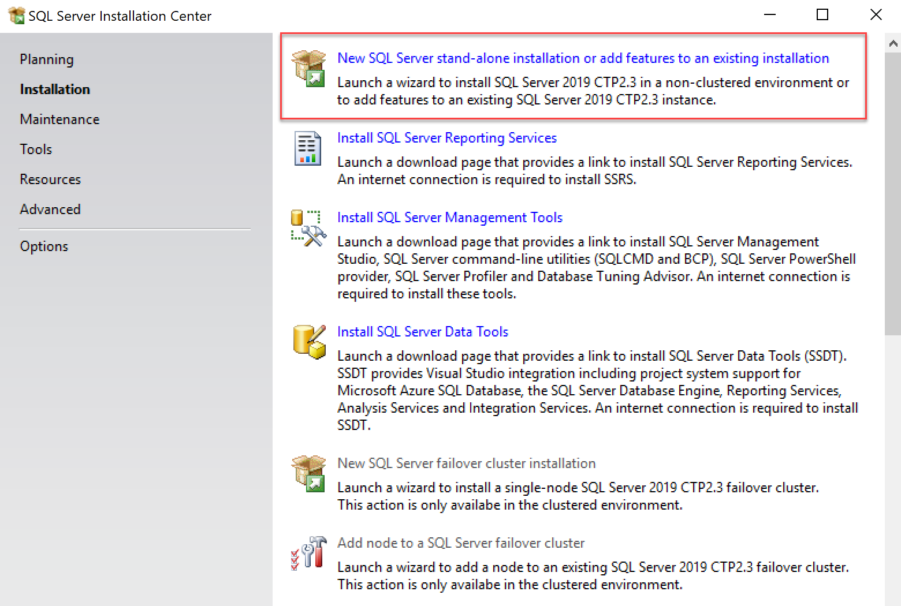
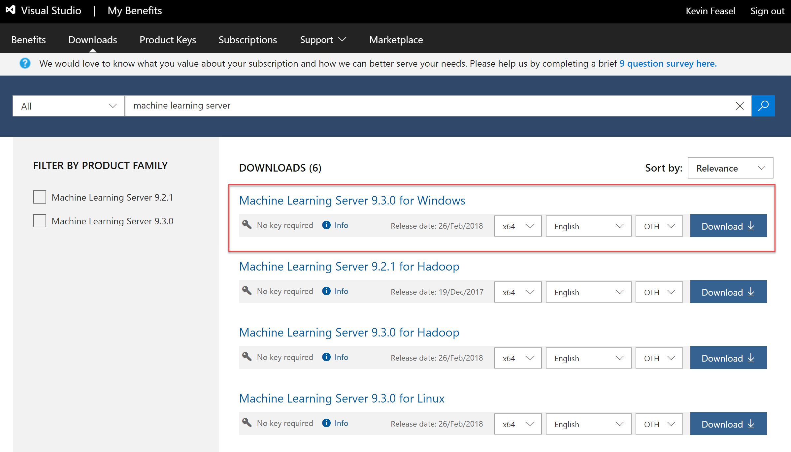
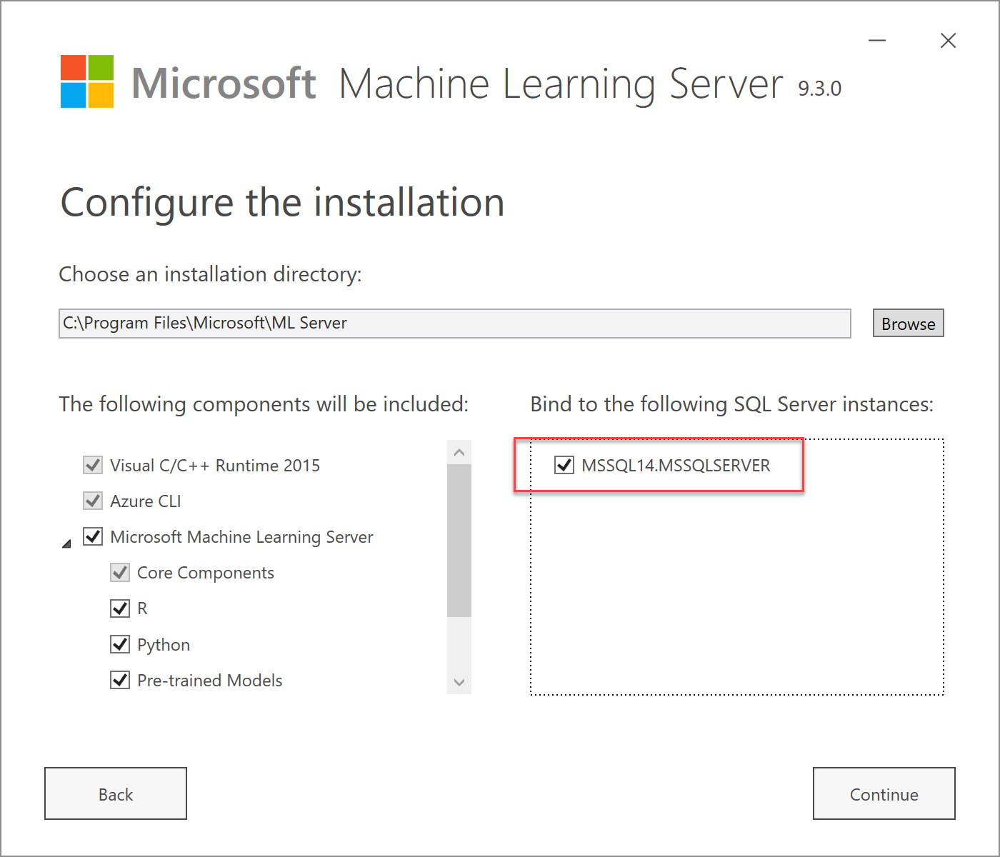
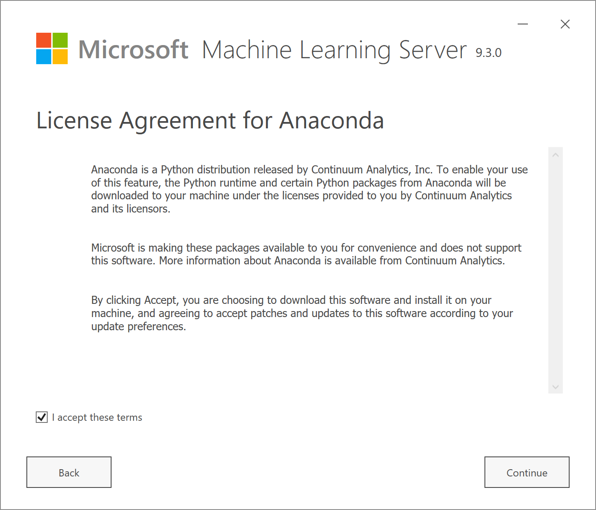
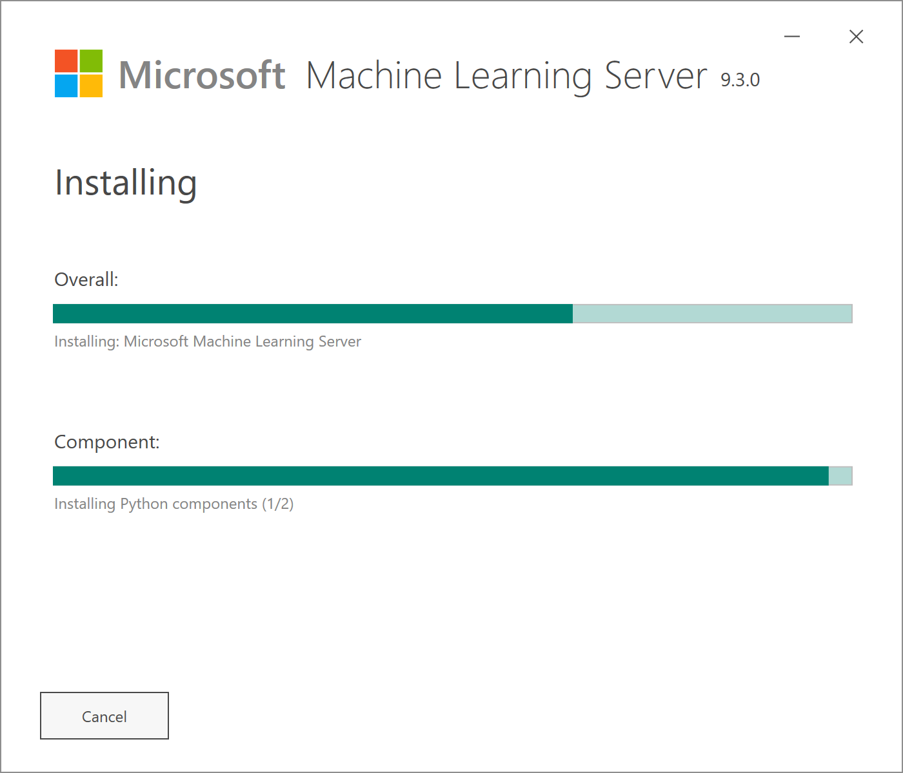

SQL Server Machine Learning Services in Production
Kevin Feasel (@feaselkl)http://CSmore.info/on/mlservices
Who Am I? What Am I Doing Here?


What is ML Services?
SQL Server Machine Learning Services (ML Services) was originally released as SQL Server R Services with SQL Server 2016.
Since then, Microsoft added support for Python in SQL Server 2017 and renamed the product accordingly.
With SQL Server 2019, Microsoft has added Java support as well and has opened the door to other languages too.
Motivation
My goals in this talk:
- Introduce you to SQL Server Machine Learning Services.
- Explain principles for managing external packages and deploying custom code.
- Show the security models available for ML Services.
- Provide tips on managing Machine Learning Services.
Agenda
- Installing ML Services
- Installing Packages
- Code Management
- Security and Roles
- Managing ML Services
- General Tips
Start a New Installation
Select ML Services

Enable External Scripts

Restart the Launchpad
Once you have enabled external scripts, be sure to restart the Launchpad service. To be safe, you might want to restart the SQL Server service as well.
Agenda
- Installing ML Services
- Installing Packages
- Code Management
- Security and Roles
- Managing ML Services
- General Tips
Package Management
There are several techniques for installing packages in R and Python. Key factors in deciding what to do are:
- Which SQL Server Version?
- Do you have internet access?
- Do you prefer easier options or more feature-rich options?
- Do you require central management of many instances?
sqlmlutils
The sqlmlutils package allows you to install R or Python code remotely. This is the best way to install packages for SQL Server 2019 (R or Python) or 2017 (R only).
R / Python Console
If you have administrative access to the machine running SQL Server, you can open up the R console and run install.packages() in the console. Similarly, you can run pip install from the command line for Python.
By default, the R console is installed in the MSSQL{##}.{MSSQLSERVER}\R_SERVICES\bin folder, and pip.exe is installed in the MSSQL{##}.{MSSQLSERVER}\PYTHON_SERVICES\Scripts\ folder.
Create External Library
The CREATE EXTERNAL LIBRARY requires GRANT ALTER ANY EXTERNAL LIBRARY and allows you to install a package from a zip file.

miniCran
For locked-down corporate environments, install the miniCRAN packages and create your own repository. Pull packages from CRAN or MRAN as desired. Then, use one of the prior options to install packages, pointing to this miniCRAN server as your source.
sp_execute_external_script
You can execute scripts using sp_execute_external_script. This includes install.packages().
This technique does not work well for SQL Server 2019.
rxInstallPackages
The rxInstallPackages function is Microsoft's function for safe installation of packages. It is a potential replacement for install.packages(), adding the ability to install pakages into per-database, per-user repositories. You can call it via sp_execute_external_script as well for versions prior to SQL Server 2019.
Offline Options
If your SQL Servers have no outbound Internet connectivity, you can still manage packages.
One option is to set up a SQL Server with outbound access, install packages on it, and then copy the Library folder to your other instances.
Another option is to download zip files of your desired packages (and their dependencies) and run install.packages or rxInstallPackages to install these zipped binaries.
Use This When:
- sqlmlutils: start with this for 2019, or for R packages in 2017.
- Console: "complex" packages (e.g., Keras in R) or cases when sqlmlutils fails to load a package from a repository.
CREATE EXTERNAL LIBRARY: cases when sqlmlutils fails to load a custom package.miniCran: R package installation in offline corporate environments.sp_execute_external_scriptandrxInstallPackages: SQL Server 2016 (R) or SQL Server 2017 (Python).- Offline installation: Python in SQL Server 2017.
Demo Time
Agenda
- Installing ML Services
- Installing Packages
- Code Management
- Security and Roles
- Managing ML Services
- General Tips
Where Code Belongs
Putting small snippets of code in text as part of a call to sp_execute_external_script is fine, but as your code gets more complex, it becomes much harder to maintain for the same reasons dynamic SQL is hard to maintain.
The best option is to segregate your R or Python code from your SQL workflows as much as possible, akin to how dependency injection separates external resources from internal code.
R Packages
Instead of storing all of your code in SQL queries, create a reference library with your code. This offers a few benefits:
- Development using R Studio is easier for your data scientists.
- Debugging R code is much easier outside of SQL Server.
- Packages allow you to maintain R code history better than procedures.
Demo Time
Isolate External Script Calls
Create wrapper procedures to call the external script procedures. This allows you to call your R or Python code within SQL Server but without any permanent results. Doing this is critical for troubleshooting code oddities.
Storing Models
When working with R, there are a few places we can store models and other binaries:
- Wrapped up as files in an R package.
- On the file system of your server.
- Inside SQL Server.
Each comes with its own benefits and drawbacks.
Updating Code Packages
Using the package model for your custom R code allows you to perform updates with ease: simply deploy the new zip file to the server and install the package. Your code must not be running at the time (or else you will find the library locked), so this may be a little tricky for especially long-running processes.
For third-party libraries, update.packages() will update all packages. Using one of the controlled package management techniques is best here.
Agenda
- Installing ML Services
- Installing Packages
- Code Management
- Security and Roles
- Managing ML Services
- General Tips
Executing Scripts
Users who wish to execute external scripts will need the GRANT EXECUTE ANY EXTERNAL SCRIPT permission. Alternatively, the user may be in the db_owner database role or the sysadmin server role.
Role-Based Access Control
SQL Server has a rich set of role-based access controls around things such as:
- Reading from or writing to specific tables
- Executing external scripts
- Installing packages
- Executing stored procedures
- Running predictions with
PREDICTorsp_rxPredict
Each comes with its own benefits and drawbacks.
Agenda
- Installing ML Services
- Installing Packages
- Code Management
- Security and Roles
- Managing ML Services
- General Tips
Upgrading R or Python
SQL Server ships with specific versions of R and Python. If you wish to upgrade, you will need to bind a new version of Microsoft Machine Learning Server to SQL Server.
There are a few steps to binding. These instructions are for SQL Server 2017; 2016 had its own process which differed a bit from 2017.
Download ML Server
Bind to SQL Server
Accept License Terms

Accept R Open License

Accept Anaconda License
Install

Wait for Completion
Restart the Launchpad
Once you have enabled external scripts, be sure to restart the Launchpad service. To be safe, you might want to restart the SQL Server service as well.
Using Resoure Governor
Machine Learning Services can eat up CPU and memory outside of SQL Server. In heavy utilization cases, it might crowd out SQL Server and cause a degradation in experience.
To prevent this, use the Resource Governor, which can control CPU, memory, and I/O utilization for external scripts.
External Pools
Resource Governor has regular pools for controlling SQL Server behavior and external pools for controlling the Launchpad. We can create resource pools and classifier functions to segregate sessions into these pools. They can help you keep a busy server from falling over due to a poorly-timed dev query.
Demo Time
DMVs and Administration
Machine Learning Services offers a few Dynamic Management Views (DMVs) which help you gain insight on what external scripts are doing. You can also use sp_WhoIsActive to see how your external scripts are performing.
There are also files in your SQL Server logs folder, underneath an ExtensibilityLog folder, which can help you diagnose errors with R or Python integration.
Demo Time
File Cleanup
Temporary data for ML Services runs are stored in an Extensibility Data folder.
For 2016-2017, it is in %PROGRAMFILES%\MSSQL14.MSSQLSERVER\MSSQL\ ExtensibilityData\MSSQLSERVER[00-20] by default. Each run creates a subfolder in one of the container folders.
File Cleanup
When you restart the Launchpad service, it deletes these subfolders, but if you have huge numbers of them on 2016 and 2017, the delete operation may not finish in time for the service to restart.
Once an ML Services task is complete, it no longer needs anything in this subfolder so they are safe to delete, so you can create a scheduled task to clean these regularly.
SQL Server 2019 fixed this issue.
Agenda
- Installing ML Services
- Installing Packages
- Code Management
- Security and Roles
- Managing ML Services
- General Tips
What Works Well
These kinds of scenarios work really well with SQL Server ML Services:
- Your input data is already in SQL Server.
- You have longer-running processes (batch training or scoring).
- You can use native scoring with the
PREDICToperator. - You want to interact with R using .NET code.
- You do not need real-time interactivity.
What Doesn't Work
Avoid these scenarios:
- You need singleton, near real-time predictions AND cannot use native scoring.
- None of your core data is inside SQL Server.
- Your SQL Server instance is already at near 100% CPU.
RevoScaleR Versus Core R
My biases:
- Core R is better ceteris paribus due to portability.
- If you can use native scoring, RevoScaleR is completely worth it.
- Extended Data Frames (XDF) are sometimes a necessary evil.
- Some RevoScaleR models (especially neural networks) are weak.
- If you need parallel processing, RevoScaleR is a good bet.
Parallel Processing
sp_execute_external_script has an @parallel option to try to parallelize non-RevoScaleR operations which can work with single rows of data independent of other rows--batch predictions, for example. This can speed up certain operations considerably...but so could using RevoScaleR functions, where parallelism is on by default.
Wrapping Up
SQL Server Machine Learning Services offers the ability to operationalize R or Python effectively, though it is not without its challenges.
Wrapping Up
To learn more, go here:
https://CSmore.info/on/mlservices
And for help, contact me:
feasel@catallaxyservices.com | @feaselkl
Catallaxy Services consulting:
https://CSmore.info/on/contact